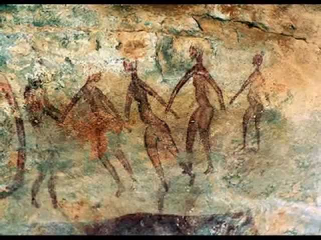
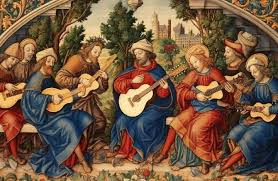
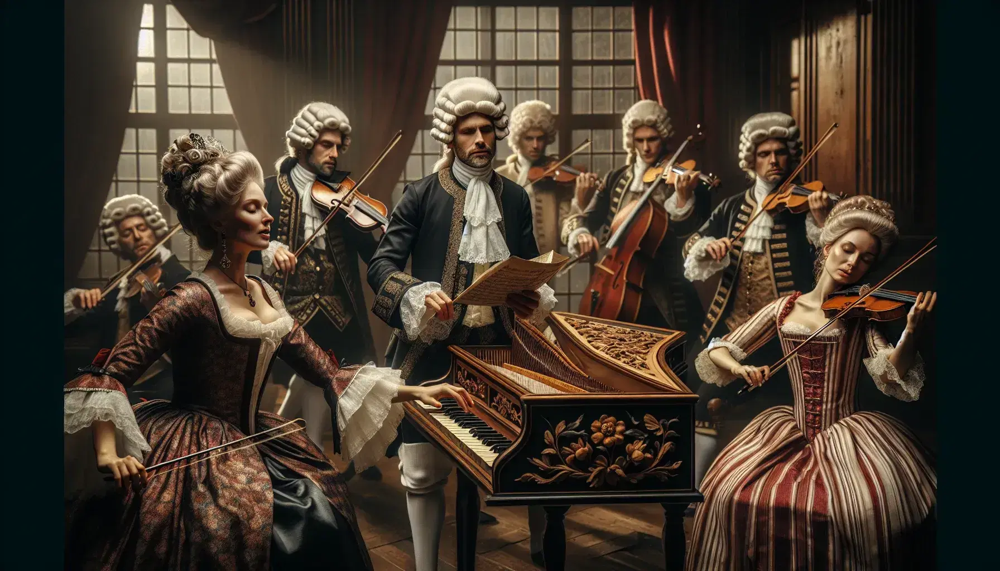
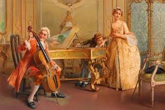
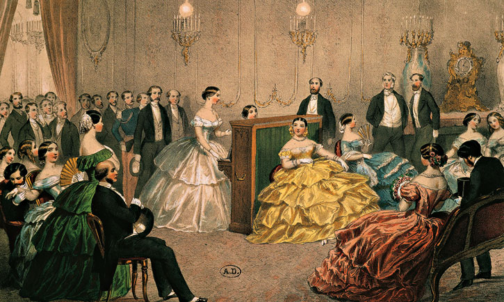
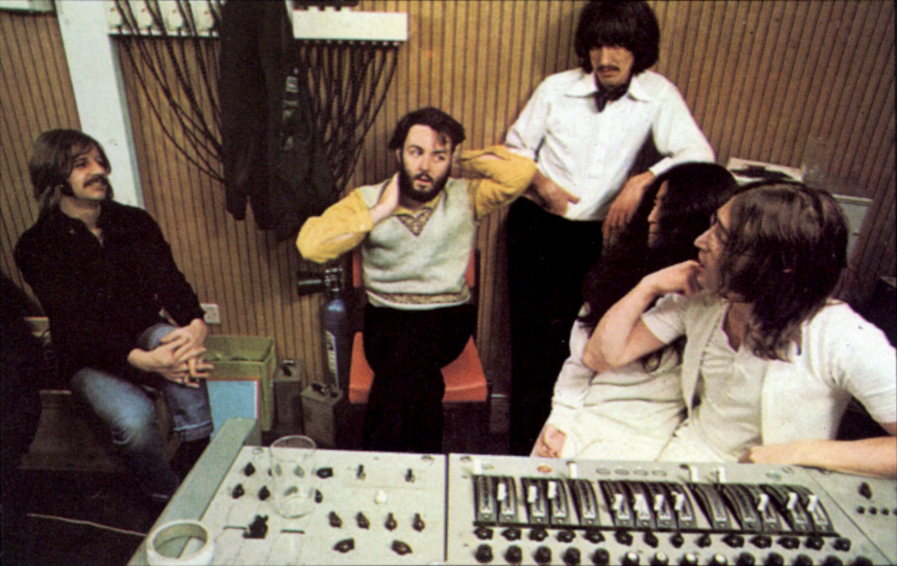
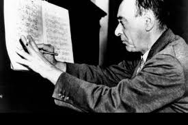
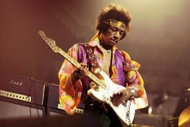

Historia de la Música
La historia de la música es un recorrido fascinante que refleja la evolución de las culturas, sociedades y tecnologías a lo largo del tiempo. Desde las manifestaciones musicales más rudimentarias en la prehistoria hasta las complejas composiciones contemporáneas, la música ha sido una constante en la vida humana, adaptándose y reinventándose según las necesidades y expresiones de cada época.
La Historia de la Música en la Prehistoria
En la prehistoria, la música era una herramienta funcional, utilizada en rituales religiosos, celebraciones y como medio de comunicación. Los instrumentos, hechos de materiales como huesos, cuernos y madera, daban forma a los sonidos prehistóricos, mientras que las pinturas rupestres sugieren un fuerte vínculo entre la música, la danza y las ceremonias. Aunque se desconoce cómo sonaba esta música, es claro que cumplía un papel social y espiritual central, consolidando su lugar en la humanidad desde sus inicios.
La Historia de la Música en la Edad Antigua

En la Edad Antigua, la música adquirió mayor estructura y propósito, desarrollándose en civilizaciones como Grecia, Roma, India y China. En Grecia, la música era una disciplina académica relacionada con la matemática y la filosofía, empleada en ceremonias religiosas y eventos sociales, con instrumentos icónicos como la lira y el aulos. Roma incorporó la música en celebraciones militares y espectáculos públicos, mientras que China e India la vincularon con la espiritualidad y la armonía, basando sus escalas en principios filosóficos. Este período sentó las bases culturales y técnicas para las músicas del futuro.
La Historia de la Música en la Edad Media

La música medieval (siglos V al XV) estuvo profundamente influenciada por la Iglesia, ya que la religión dominaba la vida cultural en Europa. El canto gregoriano, monofónico y solemne, fue la base de la música litúrgica y marcó el inicio de la tradición escrita en la música occidental. Posteriormente, surgió la polifonía, especialmente en Francia, que introdujo múltiples líneas melódicas en composiciones religiosas y seculares. Guillermo de Machaut destacó como figura clave de esta transición hacia una música más compleja.
En paralelo, la música secular floreció con trovadores y juglares, quienes crearon canciones sobre amor, guerra y narrativas populares, usando instrumentos como el laúd y la flauta. Este período también vio la evolución de la notación musical, un avance crucial que permitió preservar y difundir composiciones, sentando las bases para los desarrollos musicales de los siglos posteriores.
La Historia de la Música en el Renacimiento
El Renacimiento (siglos XV al XVII) trajo un renovado interés por la expresión individual y la estética clásica. La música polifónica alcanzó su apogeo con compositores como Palestrina, cuyas obras sacras demostraron un equilibrio perfecto entre técnica y emotividad. Se desarrollaron géneros como el madrigal y la chanson, que buscaban expresar emociones humanas con gran riqueza melódica y textual.
La música instrumental también ganó protagonismo, con la creación de piezas específicamente para instrumentos como el clavicémbalo y la viola da gamba. Este período consolidó técnicas como el contrapunto y sentó las bases de la armonía tonal, marcando una transición hacia el barroco. El Renacimiento celebró tanto la música sacra como la secular, equilibrando el intelecto y la emoción en composiciones que aún hoy son valoradas.
La Historia de la Música en el Barroco
El barroco (siglos XVII y XVIII) se caracterizó por la ornamentación y la creación de nuevas formas musicales. La ópera, nacida en este período, combinó música, drama y poesía, siendo Monteverdi y Händel algunos de sus pioneros. La música instrumental ganó relevancia con compositores como Johann Sebastian Bach, quien perfeccionó formas como la fuga y el concierto, elevando la música religiosa y secular a niveles de maestría sin precedentes.
Este período también vio el auge del estilo barroco en la ornamentación melódica y armónica, con el uso de trinos y mordentes para embellecer las composiciones. Además, se exploraron nuevas texturas sonoras, creando una base sólida para los avances del Clasicismo. La música barroca sentó los cimientos de la música clásica moderna y sigue siendo una fuente de inspiración en la actualidad.
La Historia de la Música en el Clasicismo
Durante el Clasicismo (mediados del siglo XVIII a principios del XIX), la música priorizó la claridad, la simplicidad y el equilibrio. Los compositores buscaron crear obras accesibles y agradables al oído, utilizando formas bien definidas como la sinfonía, el concierto y el cuarteto de cuerdas. Mozart y Haydn destacaron como maestros de estas formas, mientras que Beethoven introdujo un mayor dramatismo que anticipaba el Romanticismo.
Este período dio gran importancia a la estructura, con técnicas como la sonata-allegro y el desarrollo temático, que permitieron crear composiciones coherentes y equilibradas. La música clásica se convirtió en un lenguaje universal, capaz de comunicar emociones y estructuras intelectuales a través de una simplicidad aparente, consolidándose como uno de los estilos más influyentes de la historia.
La Historia de la Música en el Romanticismo y Postromanticismo
El Romanticismo (siglos XIX y principios del XX) trajo una explosión de emotividad y pasión en la música. Los compositores, influenciados por la literatura y la filosofía, buscaron reflejar sus sentimientos y explorar nuevas formas musicales. Beethoven marcó la transición entre el Clasicismo y el Romanticismo, seguido por figuras como Chopin, Wagner y Tchaikovsky, quienes expandieron las posibilidades técnicas y expresivas de la música.
En el postromanticismo, compositores como Mahler y Strauss llevaron esta tradición a niveles aún más personales y subjetivos, mientras que el impresionismo de Debussy y Ravel rompió con las formas narrativas, evocando imágenes y atmósferas a través de texturas armónicas innovadoras. \ Este período marcó el inicio de la modernidad en la música, abriendo el camino a movimientos experimentales.
La Historia de la Música en el Siglo XX
El siglo XX fue un período de transformaciones radicales en la música, reflejando los cambios sociales, políticos y tecnológicos de la época. Este período estuvo marcado por la diversidad estilística, la ruptura de las normas tradicionales y una búsqueda constante de nuevas formas de expresión, lo que lo convierte en uno de los momentos más dinámicos e influyentes en la historia musical.
Uno de los movimientos más influyentes fue el expresionismo, liderado por compositores como Arnold Schoenberg, Alban Berg y Anton Webern. Rechazando la tonalidad tradicional, el expresionismo exploró la atonalidad y más tarde el serialismo, donde cada nota de la escala cromática se trataba con igual importancia. Estas técnicas desafiaron las expectativas del oyente y sentaron las bases para gran parte de la música contemporánea. En contraposición, el neoclasicismo, representado por Igor Stravinsky y Sergei Prokofiev, abogó por un regreso a las formas y estructuras del pasado, pero reinterpretadas con una estética moderna y frecuentemente irónica.
El impresionismo musical, liderado por Claude Debussy y Maurice Ravel, se extendió en las primeras décadas del siglo. Este estilo se centró en la creación de atmósferas sonoras mediante armonías innovadoras, escalas exóticas y texturas orquestales únicas. Por otro lado, el minimalismo, desarrollado a partir de los años 60 por compositores como Steve Reich, Philip Glass y Terry Riley, se caracterizó por patrones rítmicos y melódicos repetitivos que evolucionan gradualmente, ofreciendo una experiencia sonora hipnótica que influyó tanto en la música académica como en la popular.
La tecnología también jugó un papel fundamental en este período. La invención de instrumentos electrónicos como el sintetizador y el desarrollo de grabaciones de campo abrieron un nuevo mundo de posibilidades sonoras. En los años 50 y 60, compositores como Karlheinz Stockhausen y Pierre Schaeffer experimentaron con la música electrónica y la música concreta, utilizando sonidos pregrabados y manipulados para crear composiciones innovadoras. Estas exploraciones llevaron al surgimiento de géneros como el techno, el house y el ambient, que más tarde influirían profundamente en la música popular.
El siglo XX también fue testigo del auge de la música popular, que adquirió una importancia cultural sin precedentes. El jazz, nacido en las comunidades afroamericanas de los Estados Unidos, se convirtió en un fenómeno global y sirvió como base para la evolución de estilos como el swing, el bebop y el cool jazz. El jazz influyó incluso en la música clásica, con compositores como George Gershwin y Leonard Bernstein integrando elementos del género en sus obras. Posteriormente, el rock and roll, que surgió en los años 50, marcó el inicio de una revolución cultural, seguido por movimientos como el punk, el heavy metal y el hip hop, que redefinieron los límites de la música popular y su impacto en la sociedad.
En paralelo, la música clásica contemporánea se aventuró en nuevos territorios. John Cage, por ejemplo, desafió las nociones tradicionales de composición con su exploración de la aleatoriedad y el silencio, como en su famosa obra 4’33”. Otros, como Morton Feldman, experimentaron con la música indeterminada, creando paisajes sonoros etéreos. La música académica del siglo XX rompió las barreras entre compositor, intérprete y oyente, dando paso a experiencias participativas e inmersivas.
En la segunda mitad del siglo, los medios de comunicación y la globalización permitieron un intercambio cultural sin precedentes, llevando a la música de diferentes culturas a audiencias internacionales. Esto impulsó la fusión de estilos, donde elementos de músicas tradicionales de África, Asia y América Latina se mezclaron con géneros populares y académicos, creando nuevos lenguajes musicales.
La Historia de la Música en la Actualidad
En el siglo XXI, la música continúa siendo un reflejo de la sociedad. Los avances tecnológicos han democratizado la producción musical, permitiendo a artistas independientes crear y distribuir música sin necesidad de grandes recursos. Las plataformas de streaming han transformado la manera en que consumimos música, promoviendo una diversidad sin precedentes.
La música electrónica ha evolucionado hacia géneros como el EDM (Electronic Dance Music), mientras que el hip hop se ha consolidado como una de las formas más influyentes de expresión artística y cultural. Al mismo tiempo, compositores contemporáneos como Max Richter y Ólafur Arnalds han combinado elementos de la música clásica con la electrónica y el minimalismo, creando obras que resuenan tanto en el ámbito académico como en el popular.
Además, la música actual refleja preocupaciones sociales y políticas, abordando temas como la justicia racial, el cambio climático y la identidad de género. Esta versatilidad demuestra que, aunque la música ha cambiado significativamente a lo largo de los siglos, su capacidad para comunicar emociones, unir a las personas y abordar las grandes preguntas de la humanidad sigue siendo tan poderosa como siempre.